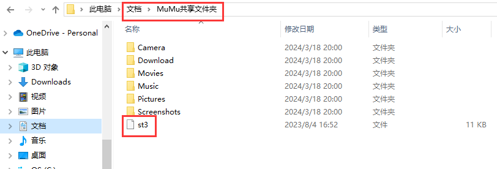
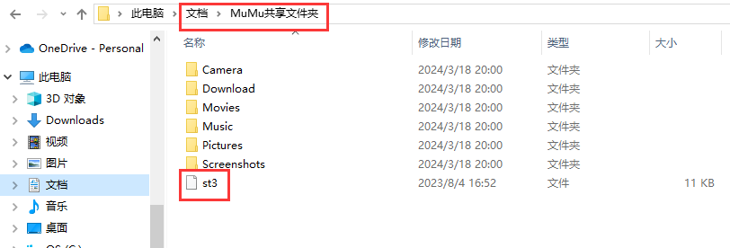

本文介绍如何在Windows上使用MuMu模拟器获取Arcaea的本地存档st3文件。
1. 安装MuMu模拟器12
https://mumu.163.com/index.html
可以提前记一下安装目录，后面有用。
2. 安装Arcaea
官网太慢可以试试第三方下载：https://616.sb/
安装包文件下载完直接拖进模拟器即可自动安装。
3. 同步存档
模拟器上打开Arcaea，登录账号，同步云端的存档到模拟器上。记得提前在原设备上同步存档到云端，以及注意24小时内不要同时登录包括模拟器在内的三个以上设备。
4. 开启模拟器的Root权限


其实这才是用模拟器最主要的点，一般安卓设备出厂都是没有Root的，如果有刷过Root的手机，不用模拟器也可以用同样的方法拿到存档文件。
开启了Root权限以后，你可以使用任何能够管理根目录的文件管理类App找到st3文件，位置是/data/data/moe.low.arc/files/st3，然后将它复制到MuMu共享文件夹，从而在电脑上拿到它。具体可参考官方说明：
https://mumu.163.com/2017/06/20/25905_696022.html
。
这里也推荐一个开源免费的文件管理App：质感文件 https://blog.dun.im/anonymous/materiai-fiies-material-design-file-manager-for-android.html 。
安装后如图所示找到st3文件，并复制到MuMu共享文件夹即可从模拟器内拿出来。访问根目录时App会申请root权限，勾选“永久记住选择”并允许即可。
 

你也可以将文件夹/data/data/moe.low.arc/files和MuMu共享文件夹设置为书签，方便找到文件夹。
如果你经常做这些重复的操作，自然会容易感到厌烦。
后面的操作步骤都是为了将复制文件的操作用批处理脚本自动化，方便后续拉取最新的st3的操作。如果在后面的自动化步骤碰到不好解决的问题，可以使用上面的App手动复制st3文件。
5. 确认端口
打开MuMu多开器，记一下模拟器用的adb端口号（这里是16384）。
6. 执行adb命令
做安卓的同学应该比较熟悉adb，这里用的是MuMu模拟器安装后自带的adb。以root权限使用adb能够直接导出安卓文件系统内部的文件。这里提供两种操作方法。
方法一：输入以下参数来直接生成带有完整命令的bat脚本，下载后直接双击运行即可，运行成功后即可在导出文件夹内找到st3存档文件。可以多次执行脚本，每次执行都会导出并覆盖原有文件。
下载脚本时，浏览器可能会报告安全问题，因为恶意的脚本可能会窃取信息或损坏计算机。此生成的脚本没有这样的恶意代码，可以放心下载并保留。
在第一次执行脚本的时候可能会弹出需要授予root权限的对话框，同样勾选“永久记住选择”并允许即可。
方案二：手动执行adb命令。找到模拟器的安装目录下的shell文件夹，以此路径打开命令行工具。
可通过空白处右键菜单->在终端打开：

也可以直接在文件浏览器地址栏输入powershell或cmd并按回车来打开：

再在命令行内手动依次输入并回车执行以下几个命令，即可将模拟器内的本地存档复制到目标位置。
.\adb.exe root
.\adb.exe kill-server
.\adb.exe start-server
.\adb.exe connect 127.0.0.1:端口号
.\adb.exe -s 127.0.0.1:端口号 pull /data/data/moe.low.arc/files/st3 导出st3的文件夹
如下图所示，先在E盘创建E:\temp\616sb文件夹，然后用adb将
/data/data/moe.low.arc/files/st3
文件抽取到616sb文件夹下。初次执行可能需要授权，同样在模拟器内界面上点击允许即可。

完成以后找到里面的st3文件即为包含本地分数的存档文件。
7. 解析工具
存档的格式是sqlite数据库文件。Arcaea Toolbelt的主站支持通过st3存档导入成绩并计算b30。
此外还推荐一个sqlite数据库可视化工具SQLiteStudio，有兴趣可以尝试一下。